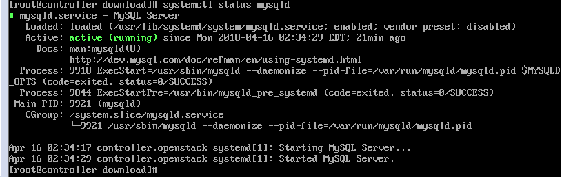
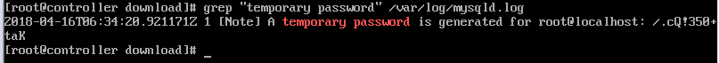

配置yum源
1
2
3
4
|
root @~> wget http://dev.mysql.com/get/mysql57-community-release-el7-8.noarch.rpm
root @~> yum localinstall mysql57-community-release-el7-8.noarch.rpm
|
检查mysql源是否安装成功:
1
| root @~> yum repolist enabled | grep "mysql.*-community.*"
|
如下图则安装成功:
安装mysql
1
| root@ ~> yum install -y mysql-community-server
|
启动MySQL服务并设置开机自动启动
1
| root@ ~> systemctl start mysqld
|
查看MySQL启动状态

1
2
| root@ ~> systemctl enable mysqld
root@ ~> systemctl daemon-reload
|
修改默认密码
刚安装完的mysql会自动给root用户分配一个临时密码，而且必须重新设置密码(从5.5版本开始)
1
| root@ ~> grep "temporary password" /var/log/mysqld.log
|
1
| mysql> set PASSWORD = PASSWORD('[YOUR_NEW_PASSWORD]')
|

- 可能遇到的问题：设置的密码过于简单mysql报错:
1
| Your password does not satisfy the current policy requirements.
|
解决方法：由于刚安装的mysql的密码默认强度是最高的，若想要设置简单的密码就要修改validate_password_policy的值，
validate_password_policy有以下取值：
| Policy | Tests Performed |
|---|
| 0 or LOW | Length |
| 1 or MEDIUM | Length;numeric,lowercase/uppercase,and special characters |
| 2 or STRONG | Length;numeric,lowercase/uppercase,and special characters; dictionary file |
操作：
1
| mysql> set global validate_password_policy=0;
|
1
| mysql> set global validate_password_length=4;
|
之后就可以设置简单的密码了。
允许root远程登录
1
2
| mysql> GRANT ALL PRIVILEGES ON *.* TO 'root'@'%' IDENTIFIED BY '[YOUR_PASSWORD]' WITH GRANT OPTION;
mysql> flush privileges;
|
修改字符集编码为UTF-8
1
| mysql> show variables like "char%';
|
检测是否都是utf-8(filesystem除外)，如果不是就需要修改。 character_set_server一般是lantin1。
1
2
3
4
5
6
7
8
|
systemctl stop mysqld
vim /etc/my.cnf
systemctl start mysqld
|